Experimental Measurements of the Flow and Heat Transfer in a Square Jet Impinging on an Array of Square Pin Fins |
|
Project TeamAlfonso Ortega and Johnny Issa Project SponsorIntel Corporation, Systems Architecture Laboratory, Hillsboro, OR Cisco Systems Project Description |
|
|
An experimental study was conducted to investigate the flow
behavior, pressure drop, and heat transfer due to free air jet
impingement on square in-line pin fin heat sinks (PFHS) mounted on a
plane horizontal surface. This study presents experimental results for
the hydraulic and thermal behavior of a well-defined top inlet side
exit TISE pin fin configuration over a wide variation of pin height,
pitch and thickness, both with and without tip clearance. The goal of
this study is to clarify the physics of the flow and heat transfer in
this generic geometry, as a step towards developing better
methodologies for optimal design of this advanced air-cooling
technology.
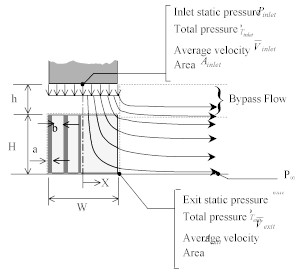 Figure 1. Flow behavior in jet impingement on pins with tip clearance.
Experimental Setup:Fluid mechanics:
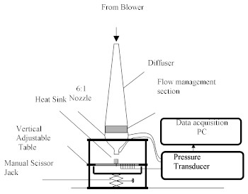 Figure 2 Schematic of the experimental set-up.
A
removable 300mm x 300mm polished aluminum plate with a cutout for the
heat sink is placed in the frame. A 25mm x 25mm cutout, 2.5mm deep, was
made in the middle of this plate under the outlet of the nozzle so that
the base of the heat sink is flush with the polished surface. This test
surface is equipped with 16 pressure taps distributed, 8 along the
centerline and the rest along the diagonal of the square base, as shown
in figure 3. Pressure taps were also placed in the base of the heat
sinks in various locations. A speed controllable centrifugal blower,
which is connected to the top of the diffuser with a duct, provides
precise flow to the jet. The jet impinges with various velocities at
several clearance ratios on the heat sink.
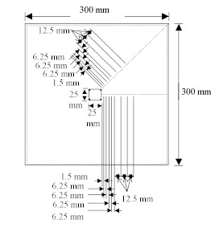 Figure 3 Schematic of the hydraulics test plate, top view.
Heat transfer:
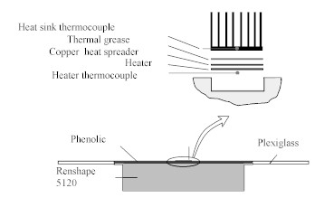 Figure 4 Schematic of the heat transfer plate.
This
surface is a 300mm x 300mm Plexiglas plate that has a 125mm x 125mm
cutout in its center to seat a low conductivity block. The block
consists of a low-density urethane foam (Renshape 5120) with dimensions
125mm x 125mm x 46.88mm. The top surface of the block is covered by a
3.12mm thick Phenolic plate that provides a smooth surface to the
impinging flow. The Phenolic plate is 125mm x 125mm and has a 25mm x
25mm cutout in its center so that the heat sink base is flush with its
top surface. A 25mm x 25mm, Kapton-encapsulated nichrome serpentine
heater is placed in the middle of the upper surface of the Renshape
block. The heater is adhered to a 25mm x 25mm x 0.62mm thick copper
heat spreader. A very thin layer of thermal grease is placed between
the heat spreader and the heat sink base in order to reduce thermal
resistance. A number of thermocouples are utilized in order to measure
various temperatures. The first one is placed underneath the heater to
determine its maximum temperature. The second one is embedded in the
heat sink base. Three thermocouples are placed at the nozzle inlet.
One, type T, measures the temperature of the air jet referenced to an
ice bath. The other two, type T and K, are used as references for the
heat sink and the heater thermocouples, respectively. The heat sinks
instrumented for heat transfer measurements were separate but nearly
identical in geometry and finish as those used for pressure mapping.
Procedure:
Fluid mechanics:
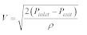 (1)
The
static pressure at the inlet of the nozzle, Pinlet, is taken to be
equal to the total pressure, since the velocity of the flow is
negligible at this location compared to the nozzle exit velocity, V.
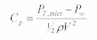 (2)The
behavior of Cp , in addition to the local static pressure mapping along
the heat sink and test surface, is examined for the different heat
sinks under the various flow conditions. 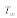 , the temperature difference between the heat sink base and air flow , and the temperature difference between the heater and air jet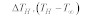 . The heater and heat sink base temperatures were referenced to the jet temperature in order to reduce the uncertainty in the measurement. The induced DC voltage from the thermocouples is proportional to the temperature and is measured with a Fluke Hydra Model 2620 interfaced to the computer via a GPIB board. The signal is converted to temperature using a calibration table found by calibrating sample thermocouples against a NIST traceable resistance thermometer. Temperatures are not recorded until after steady state conditions are achieved, that is when no variation in the signal is observed for two consecutive minutes.The heat convected through the heat sink, Qb, is given by:
(3)
A
significant amount of heat is conducted into the block, and since the
downward losses were not directly measured, they were modeled using a
finite difference model of the system using a commercial conduction
code [TAS]. The code was used to solve for the heat loss into the block
by applying the following boundary conditions to the block surfaces:
natural convection heat transfer to the bottom surface and the sides,
and the heat transfer coefficient for a jet impingement on the top
surface. The conduction heat losses varied from 9.54% to 19.87% of the
total heat supplied, Qt . The radiation heat loss from the heat sink to
the atmosphere was accounted for by a rigorous gray diffuse surface
model, and was predicted to be between 1.06% and 6.12% of the total
heat supplied Qt.
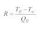 (4)
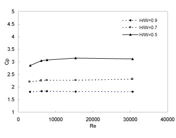 Figure 5 Dependence of pressure loss coefficient on Reynolds number for heat sinks of different heights, 8x8 array, at h/H = 0.
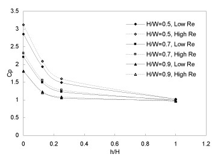 Figure 6 Effect of tip clearance on overall pressure loss coefficient for 8x8 array at various Re. 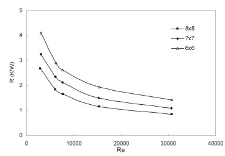 Figure 7 Heat sink base-to-ambient resistance dependence on Reynolds number and pin density for a/H = 0.12 at fixed pin height H/W = 0.9 and h/H = 0.
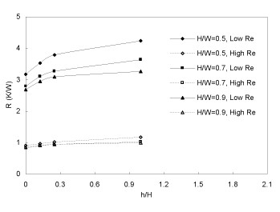 Figure 8 Overall thermal resistance vs. clearance ratio at high Re (30600) and low Re (3000) for 8x8 heat sink.
Publications
|
|
 PDF
PDF